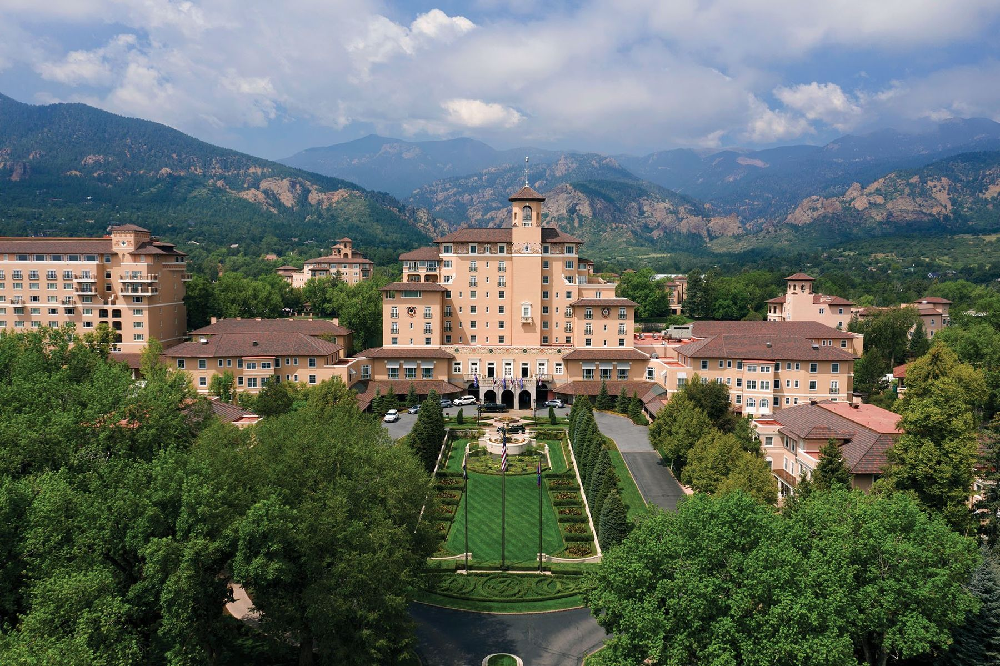

Jazz standards for cocktails and dinner
Jazz duo and trio for hire for weddings and events.
You know how a little live jazz can make a cocktail hour feel like the nicest bar in town? Our jazz duo plays standards on upright bass and guitar at a volume that's easy to talk over, and for a bigger crowd, the trio adds drums played with soft brushes.
Couples book it for the ceremony and the cocktail hour, and companies book it for client dinners and receptions. We love jazz standards for this, since most guests will recognize them even if they can't name them.
We'll shape the music around your event, including how many musicians you need, the songs and what they wear. Here’s how booking through Signet works.
Trusted and booked by
Sizes
Should you book a jazz duo or a jazz trio?
- The duo
- Upright bass and guitar can cover cocktails and dinner together, or just a single hour on its own. It fits in a corner, so it can play venues that don't have space for a full band.
- The trio
- The drums add a steady beat that helps the music reach a bigger crowd, and the brushes keep them soft enough for dinner.
“[He] was fantastic, he struck the right note (pardon the pun) with our guests by not only playing beautifully, but also by playing quietly in the background so as not to disturb the conversation of our guests. Everyone loved him and would 100% hire him again. He is a tru pro!”
Hoping to end on the dance floor? Tejas Singh can start as a duo and grow to a quartet. Changes Jazz Trio plays the standards with a modern edge.
Occasions
Perfect booking for
- Client dinners and member events
- At a client dinner the conversation comes first, so the duo can keep the music low all the way through.
- Corporate events with a program
- The duo can stop for remarks and awards and pick back up when they're finished. Learn more about our corporate jazz bands.
- Wedding cocktail hours
- The duo can play the hour between the ceremony and dinner, and the ceremony itself if you'd like. Looking for jazz from the processional to the last dance? Check out our wedding jazz band.
- Dinner parties at home or at a club
- A duo fits a house or a club without moving the furniture, in Denver or anywhere on the Front Range.
- Senior living
- The duo can play the standards your residents grew up with, and we can set up a regular weekday afternoon in your common area.
- Sunday brunch
- The duo can play through a restaurant’s or a hotel’s Sunday brunch from start to finish.
- Memorial receptions
- The duo can play the reception or celebration of life after a service, with the songs your family chooses.
Prefer singer-songwriter and folk-rock covers? Check out our acoustic duo. Planning something for the holidays? Our Christmas jazz trio plays the season’s songs. For prices, check out what a jazz band costs in Denver.
A sample of songs
Here's a sample of the jazz standards on our song list. If there's a song you'd love to hear, just let us know.


- The Girl from IpanemaStan Getz & João Gilberto
- Autumn LeavesCannonball Adderley
- Fly Me to the MoonFrank Sinatra
- All of MeBillie Holiday
- Take the A TrainDuke Ellington
- Blue BossaJoe Henderson
- MistyErroll Garner
- There Will Never Be Another YouChet Baker
- Someday My Prince Will ComeMiles Davis
- Days of Wine and RosesWes Montgomery
- SummertimeElla Fitzgerald & Louis Armstrong
- WaveAntônio Carlos Jobim
- WindowsStan Getz
- 500 Miles HighChick Corea
- SpainChick Corea
- FootprintsWayne Shorter
- Red ClayFreddie Hubbard
- Have You Met Miss JonesElla Fitzgerald
- So WhatMiles Davis
- The Great Pumpkin WaltzVince Guaraldi Trio
- My Favorite ThingsJohn Coltrane
- Ain't No SunshineBill Withers
What clients say
“Their combination of upright bass and guitar brought an effortless sophistication and warmth to the evening. Their musicianship was truly outstanding. Elegant and refined. They have a remarkable ability to enhance the atmosphere without overpowering it...”
Venues
We’d pick Jazz Duo for live music at these venues.

Downtown Denver
Hyatt Centric Downtown Denver
A rooftop bar and patio, a cozy lobby and the Colorado Ballroom.
Played hereTejas Singh
Live music at Hyatt Centric Downtown Denver
Downtown Denver
Four Seasons Hotel Denver
The Grand Ballroom, the Cottonwood Ballroom and the third-floor Pool Terrace.
Acts we'd pickLittle Moses Jones · Tejas Singh · Dirty Flamenco
Live music at Four Seasons Hotel Denver
Colorado Springs, above Garden of the Gods
Garden of the Gods Resort and Club
The Three Graces Ballroom and Terrace, the View at Kissing Camels, the Garden Room, the Hill Room and the Reflection Pool.
Acts we'd pickClassical Strings · Tejas Singh · Meghan Clarisse
Live music at Garden of the Gods Resort
Aurora, by Denver International Airport
Gaylord Rockies Resort & Convention Center
Four ballrooms, the Mountain View Pavilion and its lawns, the Grand Lodge and the Front Range Lawn.
Acts we'd pickTejas Singh · Little Moses Jones · Quadrasonic
Live music at Gaylord Rockies
Downtown Denver
Grand Hyatt Denver
The Pinnacle Club on the 38th floor, the Colorado Ballroom and the Aspen Ballroom.
Acts we'd pickJazz Duo · Little Moses Jones · Quadrasonic
Live music at Grand Hyatt Denver
Downtown Denver
Hilton Denver City Center
The Colorado, Denver and Penrose ballrooms and an outdoor plaza.
Acts we'd pickLittle Moses Jones · Soul and R&B Band · Jazz Duo
Live music at Hilton Denver City Center
Downtown Boulder
Hotel Boulderado
The Boulderado Ballroom, the Mezzanine and the Grand Staircase, Columbine-Balsam and the Corner Bar.
Acts we'd pickClassical Strings · Tejas Singh · Jazz Duo
Live music at Hotel Boulderado
Downtown Denver, at the Colorado Convention Center
Hyatt Regency Denver at Colorado Convention Center
The Centennial Ballroom, the Capitol Ballroom, the Denver City Terrace and the Silver Room.
Acts we'd pickClassical Strings · Little Moses Jones · Soul and R&B Band
Live music at Hyatt Regency Denver
Broomfield, between Denver and Boulder
Omni Interlocken Hotel
The Interlocken and Centennial ballrooms, Ponderosa, the Outdoor Pavilion and the ceremony lawn.
Acts we'd pickClassical Strings · Dirty Flamenco · Little Moses Jones
Live music at Omni Interlocken
Downtown Boulder
St Julien Hotel & Spa
The Xanadu Ballroom, the lawn, the Redgarden terraces and Jill’s, with views of the Flatirons.
Acts we'd pickClassical Strings · Tejas Singh · René Moffatt
Live music at St Julien Hotel & Spa
Colorado Springs, at the foot of Cheyenne Mountain
The Broadmoor
The Main Ballroom, the Lake Terrace and Lakeside Terrace, Broadmoor Hall, the International Center and Cheyenne Lodge.
Acts we'd pickClassical Strings · Jazz Duo · Dirty Flamenco
Live music at the Broadmoor
Downtown Denver
The Brown Palace Hotel and Spa
The Grand Ballroom, the Onyx Room, Central City, the Brown Palace Club and the atrium lobby.
Acts we'd pickTejas Singh · Jazz Duo · Dirty Flamenco
Live music at the Brown Palace
Union Station, Lower Downtown Denver
The Crawford Hotel
The Cooper Lounge, the Great Hall, the Webb Gallery and the Terminal Bar on the Plaza.
Acts we'd pickJazz Duo · Solo Guitarist · Tejas Singh
Live music at the Crawford Hotel
Westminster, between Denver and Boulder
The Westin Westminster
The Westminster, Legacy and Standley ballrooms, the Waterfall Gardens, the Lake House and the Sunset Rooftop Deck.
Acts we'd pickClassical Strings · Little Moses Jones · Quadrasonic
Live music at the Westin Westminster
Jazz duo and trio questions
Looking for a particular song? If it isn't on the list, let us know when you book (we usually need a few weeks to learn new material).
What is a jazz trio?
Can we hire a jazz trio for a wedding?
Is a jazz duo enough for a big dinner?
Can the same musicians play cocktails and dinner?

Thinking about a jazz duo or trio for your event? Send us the date and we'll take it from there.
We'll bring the right sound system for your venue, and a single person on our team will look after you throughout.
Want photos or video of your event? Add them to your booking.